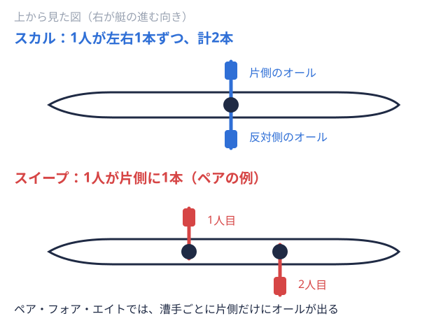

怪我予防 2026-11-11
ボート部の怪我の種類一覧｜腰・肋骨・膝・手首など部位別の特徴と受診の目安
ボート部で練習を続けていると、腰や脇腹、膝、手首、手のひらなど、さまざまな場所に痛みや違和感が出ることがあります。「これは漕ぎ込んでいれば普通の痛みなのか、休んだほうがよい痛みなのか」と迷う部員は少なくないでしょう。本記事では、大学ボート部（漕艇部）で起こりやすい怪我を部位別に一覧化し、特徴と、医療機関に相談する目安を整理します。個別の予防法は、すでに公開している詳細記事に振り分けています。なお、本記事は一般的な情報の整理であり、診断や治療の代わりにはなりません。痛みがある場合は、医師などの専門家に相談してください。
ボート部の怪我は「使いすぎ」型が中心
ローイングは、脚・体幹・腕の力を連動させてオールを引く動作を、練習中に何百回、何千回と繰り返す競技です。米国のスポーツ医学情報サイト sportsmed.org の解説記事「Common Rowing Injuries」（2024年夏号）では、ローイングの怪我の多くは反復する負荷、とくにトレーニング量とフォームに由来するとされています。同記事は、陸上トレーニングがエリート漕手オールを持って艇を前に進める選手。舵を取るだけの人は含めない。 の怪我の最大50%に関わっているとも紹介しており、水の上だけでなく、エルゴ陸の上で漕ぐ動作を再現するトレーニング機器。タイムの計測にも使う。や筋トレなどの陸トレも含めて負荷を見る視点が必要です。
の怪我の最大50%に関わっているとも紹介しており、水の上だけでなく、エルゴ陸の上で漕ぐ動作を再現するトレーニング機器。タイムの計測にも使う。や筋トレなどの陸トレも含めて負荷を見る視点が必要です。
国内の大学生調査では「腰背部・肋骨・膝」が上位
国内の大学生ボート選手を対象にした調査として、日本理学療法学術大会の抄録「大学生ボート選手における障害の実態調査と関連因子の検討」（J-STAGE）があります。全国の大学ボート部のうち回答が得られた9チーム183人を解析したアンケート調査で、過去1年間に痛みがあった割合は次のとおりでした。
| 部位 | 過去1年間に痛みがあった人数（割合） |
|---|---|
| 腰背部 | 118人（65%） |
| 肋骨 | 47人（25%） |
| 膝周囲 | 44人（24%） |
この調査は発表から年数が経っており、対象も9チームに限られます。すべての大学ボート部に同じ割合が当てはまるとは言えませんが、腰・肋骨・膝が悩みとして上位に来やすい傾向は、次に紹介する海外の文献とも重なります。
部位別に見るボート部の主な怪我
腰背部｜もっとも多い部位
腰背部は、国内調査でも海外の文献でも、ローイングでもっとも多く報告される痛みの部位です。sportsmed.org の記事では、12か月間の腰痛の発生率は32〜53%と幅を持って紹介され、背景としてトレーニング量、フォーム、腰を支える筋肉の疲労、股関節や骨盤の動きの制限などが挙げられています。椎間板の膨隆やヘルニア、腰椎分離症などの診断名も紹介されています。
オーストラリアのシニア代表の漕手77人を対象とした調査（BMC Sports Science, Medicine and Rehabilitation 2015年補遺の学会抄録）では、腰痛の経験が生涯で83%、ローイングを始めてからで57%、調査前の1か月で18%と報告されています。トップ選手の調査であり大学ボート部とは対象が異なりますが、腰の痛みがローイング選手にとって身近な問題であることが分かります。予防の方法はボート部の腰痛を予防する方法にまとめています。
肋骨｜疲労骨折は離脱が長引くことがある
肋骨の痛みは、国内調査で25%と腰背部に次ぐ割合でした。海外のレビュー「Rib stress fractures in rowers」（同2015年補遺）では、ローイングにおける肋骨の疲労骨折の発生率はおよそ9%と推定されています。ただし同文献は、この数字を確かめるにはより大きな追跡調査が必要だとも述べています。原因は複数の要因が絡む「多因子性」で、報告された多くの症例で、休養とリハビリ、段階的な復帰に約6〜8週間を要したこと、エリート漕手ではシーズンを棒に振る怪我になりうることが紹介されています。
呼吸や咳で脇腹・背中が痛む、押すと痛む場所が決まっている、といった症状が続く場合は、整形外科やスポーツクリニックに相談してください。詳しくはボート部の肋骨疲労骨折を予防する方法で解説しています。
膝｜深く曲げる動作とクロストレーニングに注意
sportsmed.org の記事では、膝のお皿まわりの痛み（膝蓋大腿部痛）、膝蓋腱の炎症、腸脛靭帯の摩擦による痛みが多いとされています。深く膝を曲げる姿勢で膝まわりにかかる力が大きいこと、ランニングや自転車を使ったクロストレーニングが関わる場合があることが背景として挙げられています。国内調査でも膝周囲は24%でした。艇上だけでなく階段の上り下りや陸トレでも痛む場合は、自己判断で続けず相談しましょう。
肩｜スイープでの左右差に注意
同記事は、肩を3番目に多い痛みの部位として紹介しています。1人が1本のオールを持つスイープ1人が1本のオールを持ち、体の片側だけで漕ぐ方式。またその方式の艇。 
前腕・手首｜「ローワーズ・リスト」と呼ばれる症状
2005年の総説「Rowing Injuries」（Rumball ほか、*Sports Medicine* 第35巻6号）では、前腕・手首まわりの問題として、肘の外側の腱の炎症（上腕骨外側上顆炎）、手首の腱鞘炎、前腕の圧迫による症状（コンパートメント症候群）などが取り上げられています。sportsmed.org の記事では、手首の甲側から前腕にかけての痛み（インターセクション症候群、通称ローワーズ・リスト）が紹介され、関連要因として、グリップの太さ、リギングオールや座席などの位置・角度を、漕ぐ人の体格に合わせて調整すること。 （艇へのオールの取り付け条件）、握りすぎ、フェザリングでの手首の動かしすぎ、疲労、濡れた環境などが挙げられています。艇の調整は部員だけで判断せず、コーチや先輩と確認すると安心です。
（艇へのオールの取り付け条件）、握りすぎ、フェザリングでの手首の動かしすぎ、疲労、濡れた環境などが挙げられています。艇の調整は部員だけで判断せず、コーチや先輩と確認すると安心です。
手のひら｜マメ・水ぶくれ
手のひらのマメや水ぶくれは部員の間では身近なトラブルですが、発生頻度を示す数字は今回確認した資料には見当たりませんでした。sportsmed.org の記事では、擦り傷や水ぶくれの手当てでは、とくに共用のオールのハンドルを清潔に保つことが大切だと触れられています。手当ての基本と受診の目安はボート部のマメ対策で解説しています。
軽量級の部員が気にしたい「エネルギー不足」
怪我そのものではありませんが、sportsmed.org の記事は、軽量級の漕手では、エネルギー不足（RED-S）が自覚されないまま進んでいる場合がある点にも触れています。体重管理が続く部員は、体重の数字だけでなく食事量や体調の変化にも目を向けてください。考え方はボート部の軽量級とはにまとめています。
痛みが出たときの判断の目安
「どの痛みで休むか」の基準は、部の中で共有しておくことが大切です。一般的な目安として、次のような場合は練習を続ける前に専門家へ相談することを検討してください。
- 同じ場所の痛みが数日以上続いている
- 漕いでいるときだけでなく、呼吸・歩行・日常動作でも痛む
- 押すと一点が強く痛む
- しびれや力の入りにくさがある
- 痛みをかばって、フォームが普段と変わっている
sportsmed.org の記事では、ローイングの怪我の多くは手術をせずに管理でき、完全な安静よりも、練習量や内容を調整しながら続けるほうが、体力の低下による再発リスクを抑えられるという考え方が紹介されています。ただし、どこまで続けてよいかは症状によって異なります。肋骨の疲労骨折のように休養が必要な怪我もあるため、判断は医師の診断を前提にしてください。
国内の調査では、主観的な脚の長さの違いが腰背部痛（オッズ比3.7）や肋骨痛（オッズ比2.4）と有意に関連していたと報告されています。ただし一時点のアンケートによる横断研究で、因果関係は断定できず、左右差も自己申告にもとづきます。気になる場合は、まず専門家に相談してみてください。
怪我を減らすために部として確認したいこと
- 練習量の急な変化を避ける：合宿や大会前に乗艇艇に実際に乗り、水上で漕ぐこと。陸上でのトレーニングと区別して使う。時間やエルゴの本数を一気に増やしていないか。合宿の流れはボート部の合宿は何をする？、オフシーズンは冬季トレーニングの組み立て方が参考になります。
- 陸トレとエルゴを見直す：筋トレメニューの考え方、エルゴの使い方で扱っています。
- 休養・睡眠・食事を計画に含める：睡眠とパフォーマンス、食事メニューも合わせてどうぞ。
- 痛みを申告しやすい雰囲気をつくる：「我慢して漕ぐ」ことを美徳にしないルールを、主将・コーチ・マネージャーで共有しておくと、離脱の長期化を防ぎやすくなります。
日本ローイング協会（JARA）の医科学委員会は「ローイング競技におけるメディカルチェックについて」という資料を公開しています。顧問・コーチや大学の保健管理センターと連携できる体制を、あらかじめ確認しておきましょう。
戦績から部の歩みを知る
怪我なく練習を積み重ねた成果は、大会結果に表れます。全日本大学ローイング選手権の最新結果は2025年度の結果ページ、各大学の歴代戦績は大学一覧、種目ごとの歴代優勝校はたとえば男子エイト漕ぐ人8人と舵を取る人1人が乗る最大級の艇。1人1本のオールを持つ。の種目別ページで確認できます。
まとめ
ボート部の怪我は部位が多岐にわたりますが、共通するのは「使いすぎ」型が中心で、練習量・フォーム・休養の見直しが予防の基本になるという点です。国内の大学生調査では、腰背部（65%）、肋骨（25%）、膝周囲（24%）が上位でした。痛みが続く、呼吸や日常動作でも痛むといった場合は、我慢せず専門家に相談してください。
出典
- 大学生ボート選手における障害の実態調査と関連因子の検討（J-STAGE）
- Common Rowing Injuries（sportsmed.org, 2024年夏号）
- Rumball ほか, Rowing Injuries, Sports Medicine 2005（Semantic Scholar）
- Rib stress fractures in rowers（PMC4535362）
- Prevalence of low back pain among elite Australian senior rowers（PMC4535305）
- ローイング競技におけるメディカルチェックについて（JARA医科学委員会）
- 大会結果は日本ローイング協会（JARA）公式サイトの大会情報の公表内容にもとづきます。
本記事は一般的な情報の整理であり、症状がある場合は自己判断せず医療機関を受診してください。
この部活・競技を応援したい方へ
取材してほしい部活を募集中
オフシーズン・引退後に、長期インターンという選択
部活で培った力を実務で試す。16タイプ診断（30秒）で合う企業がわかります。